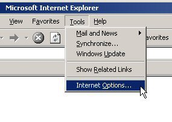
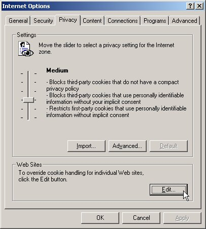
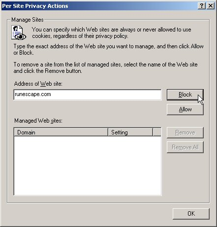
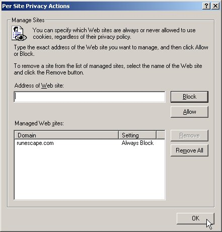

|
Disabling cookies will prevent websites from being able to use cookies to track your browsing patterns and preferences. There are some general instructions below and some specific instructions for Internet Explorer 6.
General instructions for Windows PC
GetNetWise's Instructions on disabling cookies on a Windows PC
General instructions for Mac
GetNetWise's Instructions on disabling cookies on a Mac
Specific instructions for Internet Explorer 6
1. Select Tools -> Internet Options in Internet Explorer.

1. Select Tools -> Internet Options in Internet Explorer.

2. Select the Privacy tab and click on Edit.

3. Enter runescape.com into the box and click on Block.

4. Click on Okay here and in the Internet Options window.
|